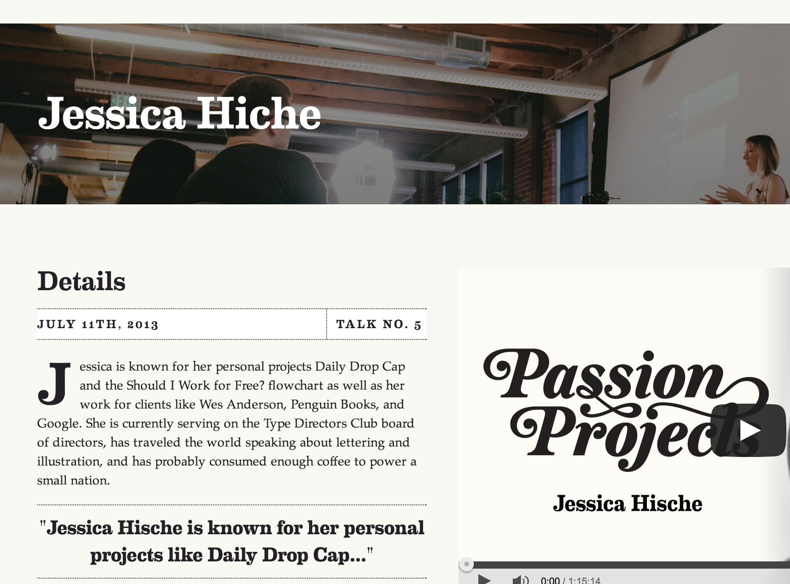
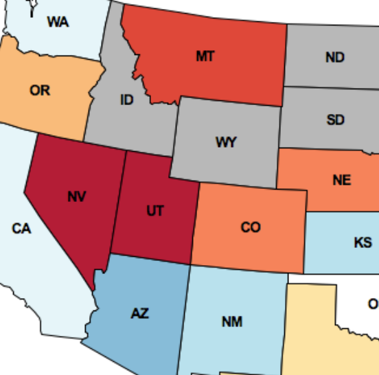
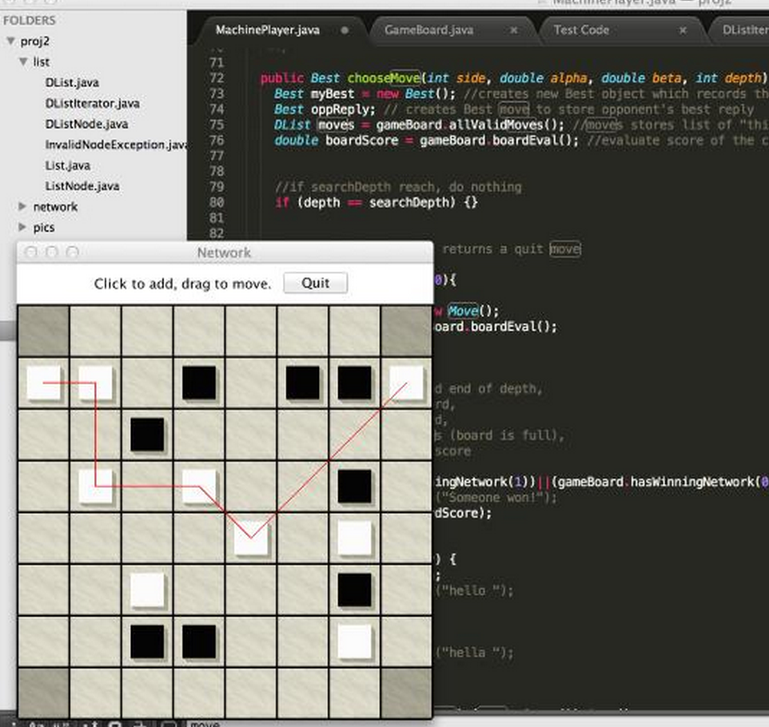
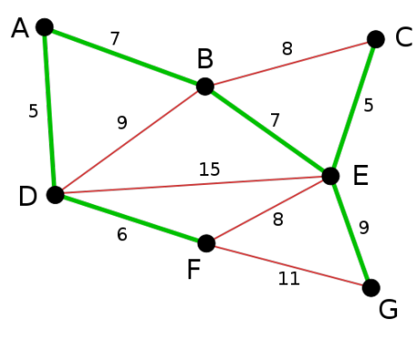
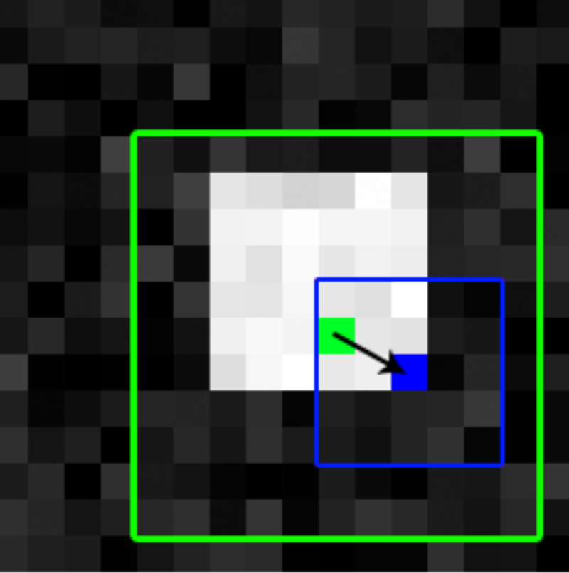
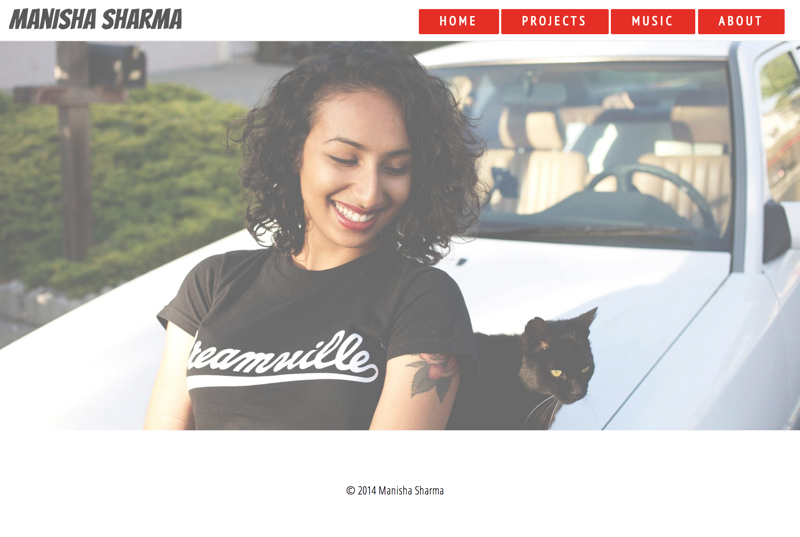

Projects
All
Personal
Web Dev
CS 61ABC
Education

Passion Projects
I worked as Julie Horvath's intern at GitHub developing and maintaining the passion projects website using HTML/CSS. Also contributed to GitHub's internal apps using coffeescript.
Berkeley CS10 edX Team
I worked on transitioning the CS10: Beauty and Joy of Computing course from Berkeley to the edX platform focusing on college and highschool students. CS10 will be available on edX in 2015!
Twitter Trends
In CS61A, using python, I developed a geographic visualization of Twitter data across the USA by collecting tweets that have been tagged with geographic locations, assigning a sentiment (positive or negative) to each tweet, based on all of the words it contains, aggregating tweets by the state with the closest geographic center, and coloring each state according to the aggregate sentiment of its Tweets. This was my first project that used python data structures.
✓ Lessons Learned:
Abstraction is beautiful.
Color Images, Edge Detection, and Run-Length Encodings
In CS61B, using Java, I implemented two simple image processing operations on color images: blurring and edge detection.
✓ Lessons Learned:
Found myself looking at a lot of computational code spanning across the entire sublime text window. I learned to comment the heck out of these lines and make additional helper methods to keep track of what I was doing and minimize repetitive code.

Network
In CS61B, using Java, we created the game Network using classes such as GameBoard, Chip, Best, Move, Player, and MachinePlayer and implemented an AI using DFS that plays the game Network against a human player or another computer program. This was a group project with 3 people. My role was to write methods to determine whether a move was valid and whether a game board contains any networks for a given player.
✓ Lessons Learned:
Playing the game with my project partners helped us identify some common techniques we all used. It was cool to see our AI using our techniques to win games ♥

Weighted Undirected Graphs and Minimum Spanning Trees
In CS61B, using Java, I created a well-encapsulated ADT called WUGraph including a method implementing Kruskal's algorithm.
Autostereograms
In CS61C, using C and MIPS assembly language, I wrote a program that captures 3D data from the environment and then visualizes it in a 3D autostereogram.Map Reduce
In CS61C, I used Apache Spark to turn the breadth-first transversal algorithm into a format compatible with the MapReduce framework.
✓ Lessons Learned:
From the Spark docs, learning that transformations use "lazy evaluation" really helped me optimize my code by considering the time cost of using actions vs. transformations on RDDS in each iteration. Also, cutting down the number of times I used an action from every iteration to every k iterations.
